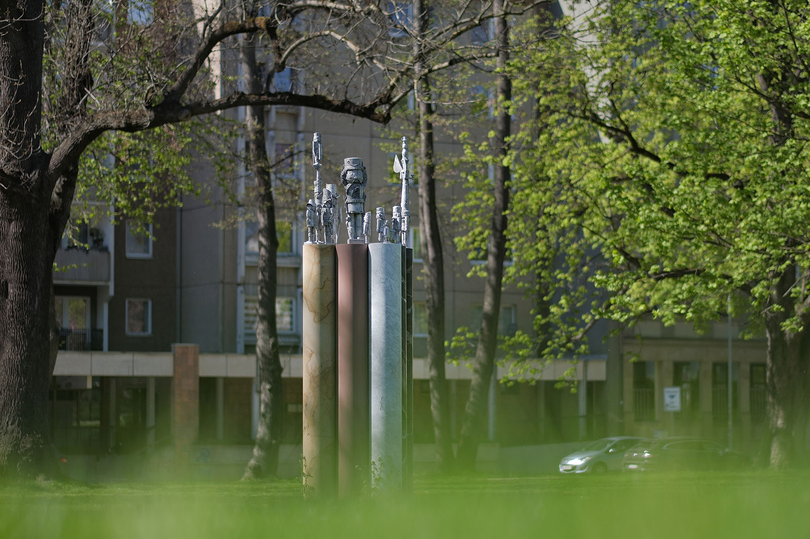
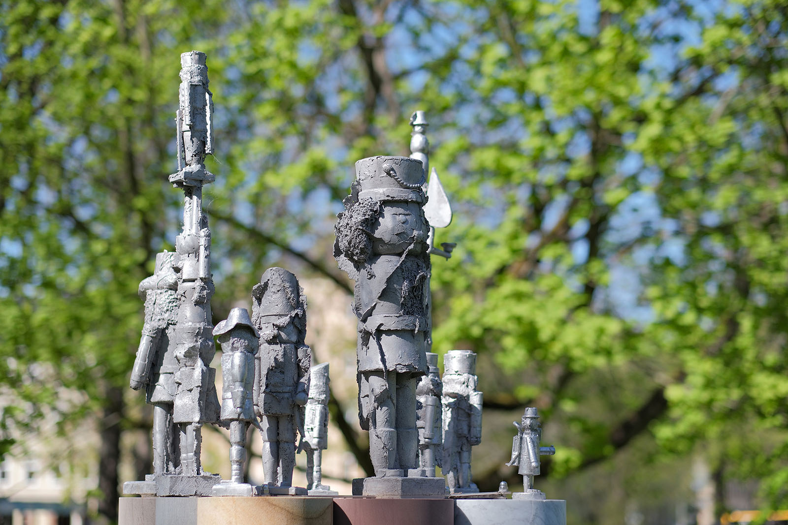
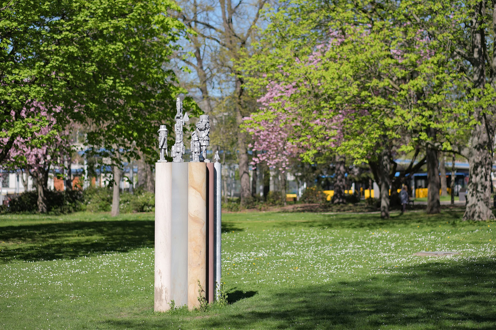
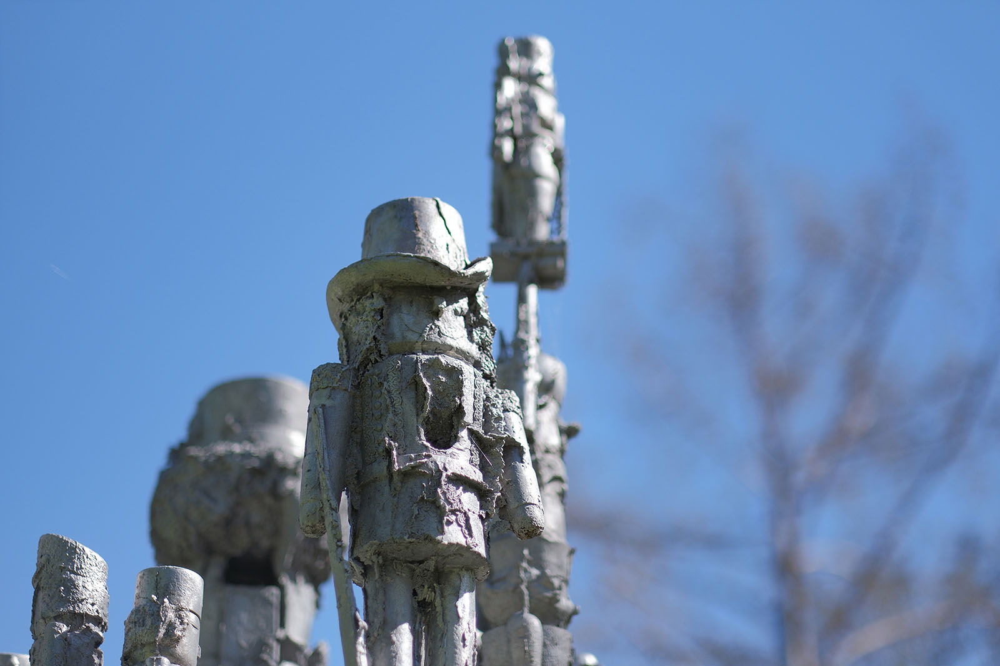
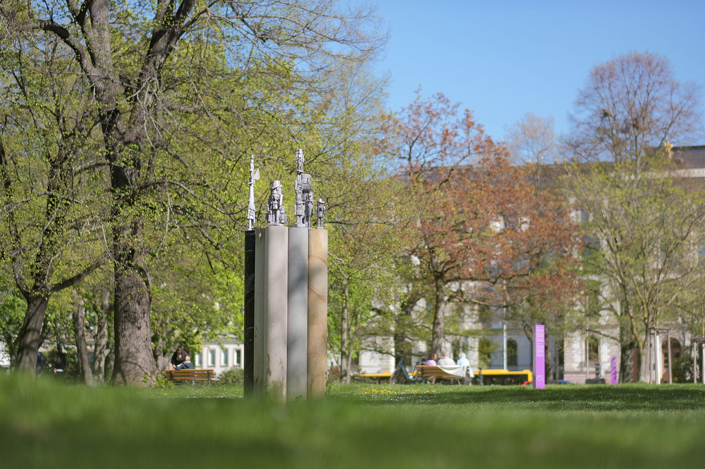
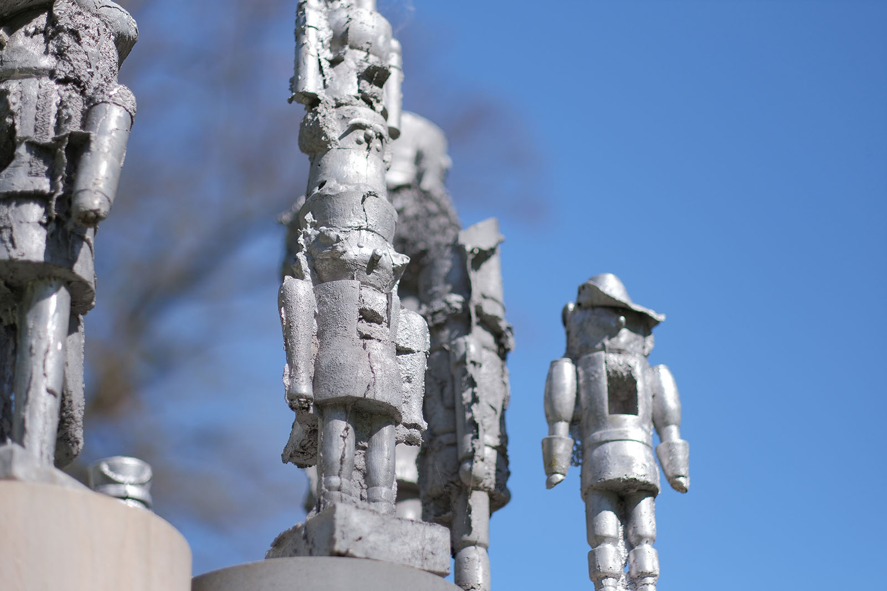

Recherche und Werkbeschreibung: Roman Pilz. Text und Fotografien wechseln sich wie in einem Magazin ab. Ein Klick auf ein Bild öffnet die Großansicht.
Osmar Ostens Plastik "Oben-Mit" würde es ohne den Kunst- und Skulpturenweg PURPLE PATH, der von der Kulturhauptstadt Europas Chemnitz 2025 als bleibendes und verbindendes Projekt für Chemnitz und seine umliegende Region geschaffen wurde, nicht geben. Die Plastik wurde direkt beim Künstler beauftragt und bereits kurz vor der offiziellen Eröffnung des Kulturhauptstadtjahres, im November 2024, auf dem im selben Jahr frisch instandgesetzten Schillerplatz eingeweiht.
Auf acht kreisrunden, glattgeschliffenen Natursteinsäulen, die wie Bohrkerne wirken und als regelmäßiger, eng zusammenstehender Block über zwei Meter in die Höhe ragen, hebt der Künstler die erzgebirgische Volkskunst auf den sprichwörtlichen Sockel. Von unten, oder besser von weitem, sehen wir über unseren Köpfen die silbrig glänzenden Formen von kleinen und großen Nussknackern, aber ein Räuchermännchen, einen Engel und einen kleinen Schneemann (lange Zeit das Markenzeichen des Künstlers).
Osmar Osten (eigentlich Bodo Osmar Münzner) wurde 1959 in Karl-Marx-Stadt (Chemnitz) geboren. Osten hatte bereits als Jugendlicher Kontakt zum Künstlerkreis der "galerie oben" und der Gruppe "Clara Mosch" – er beschloss, Künstler zu werden, und sammelte erste Erfahrungen in einem Zeichenzirkel sowie in der Abendschule der Dresdner Kunsthochschule in Oederan. Da er kein Abitur machen konnte, absolvierte er zunächst eine Lehre zum Landschaftsgärtner.
Anschließend konnte er sich an der Hochschule für Bildende Künste in Dresden bewerben und studierte von 1980 bis 1985 Malerei und Grafik. Er machte sein Diplom bei Günter Horlbeck. Das Schaffen von Osmar Osten – das ist eines der Pseudonyme, das er seit 1989 nutzt – war schon früh von der für DDR-Verhältnisse sehr freien Kunstszene in Karl-Marx-Stadt geprägt.
Der Sprachkünstler Carlfriedrich Claus war ein Vorbild, ebenso wie öffentliche Künstleraktionen und -zusammenkünfte. Osten verbindet in seiner Kunst Sprachwitz und Ironie mit naiver Figürlichkeit und einer Art abstraktem Expressionismus. Seine Werke erinnern an die Ästhetik und Poesie der Dada-Kunst.
Er arbeitet seit 1985 als freischaffender Künstler in Chemnitz, vorwiegend in den Bereichen Malerei und Grafik, bisweilen auch als Objektkünstler und Bildhauer. Der Schweizer Künstler und Kurator Johannes Gachnang sah die Werke Osmar Ostens 1998 in einer Schau der Kunstsammlung Gera und vermittelte ihn an die international renommierte "Galleria Salvatore + Caroline Ala", wo Osten in der Folge von 1999 bis 2009 fünf Einzelausstellungen hatte. Neben regelmäßigen Einzel- und Gruppenausstellungen in Galerien und Museen im In- und Ausland hatte er zudem Lehraufträge an der Fachschule für Angewandte Kunst Schneeberg (1991–1995) und am Bilbao Arte Centre (2010).
Seit 2002 ist er Mitglied der Sächsischen Akademie der Künste. 2010 und 2020 erhielt Osten den Preis der Grafikbiennale "100 Sächsische Grafiken" der Neuen Sächsischen Galerie Chemnitz und 2022 den Hans-Platschek-Preis für Kunst und Schrift. Arbeiten des Künstlers befinden sich in wichtigen öffentlichen und privaten Sammlungen, beispielsweise in den Kunstsammlungen Chemnitz und in der Galerie für Zeitgenössische Kunst in Leipzig.
2024 für die Kulturhauptstadt setzt Osmar Osten seine freundlichen Männlein trocken und hoch auf festen Grund. Er fügt deren metallische, erneut durch Abdrücke und Formguss in Aluminium umgesetzte Gestalten wie Akrobaten zu teils ca. 1 Meter hohen Stelen zusammen. Die Figuren weisen dabei ganz bewusst eine teils raue, vermeintlich fehlerhafte Oberfläche auf. Für den Metallguss charakteristische Formränder und Unregelmäßigkeiten bei besonders weichen und strukturierten Flächen der Vorlagen wurden nicht geglättet, behoben oder verworfen.
Die Dresdner Kunstgießerei fertigte die Figuren ganz im Sinne Osmar Ostens – instinktiv (oder doch wohl überlegt?) bietet sein "Denkmal" dem Betrachter einige Hinweise auf die Brüchigkeit oberflächlicher Heiterkeit und zu reinen Klischees erstarrter Formeln und Formen: Gerade wer liebt (auch seine Heimat), liebt im Bewusstsein um die Fehler und Macken, um die unnachahmlichen Eigenheiten oder Marotten der Natur und der Gewohnheiten.
Die Steinsäulen, sind kein austauschbarer Sockel, sondern der zugehörige, komplementäre Teil des Kunstwerks. Sie sind perfekt von einem Steinbildhauer geglättet und fallen durch ihre unterschiedliche natürliche Färbung auf. Sächsische Steine, wie gelbliche und graue Sandsteine und roter Porphyrtuff, werden mit weißem Marmor und schwarzem Kalkstein kombiniert. Das politische Statement "Chemnitz ist bunt" wird hier mit handwerklich veredelten Natursteinen von nah und weiter weg, sozusagen erdgeschichtlich und montangeschichtlich verankert. Wie der PURPLE PATH brachte schon der Bergbau Menschen von überall her nach Sachsen, wo sie über Generationen eine gemeinsame Tradition und Kultur begründeten.
Man kann die abstrakte Basis und die figürliche Krone von Ostens Schöpfung als Paar von ineinander verschränkten Gegensätzen lesen: Das einzigartige, in seiner naturbelassenen Form kantige, raue, aber manchmal unscheinbare Gestein wird durch die Arbeit des Handwerkers schmuck in Form gebracht, aber in gewissem Sinne auch gleichgemacht.

Die Wiedergänger der weihnachtlichen Zierfiguren sollen in der Serienproduktion am besten einer wie der andere aussehen, werden vom Künstler aber mit der Natur versöhnt, indem der Zufall ein klein wenig, wie beim Bleigießen, mit zum Gestalter wird. In diesem Sinne lässt sich auch erklären, warum meist die alten, handgefertigten Figuren, die am besten durch jahrelangen Gebrauch geehrt wurden, selbst wenn sie über die Zeit einige Gliedmaßen verloren haben oder vom Brand ein wenig versengt sind, weit mehr überzeugen als so manche perfekte Neuproduktion.
Der Titel eines Werkes ist für den Wortspieler Osmar Osten, der sogar schon mit einem wichtigen Kunstpreis für die Verbindung von Kunst und Schrift ausgezeichnet wurde, meist wesentlicher Teil des Kunstwerks. In seiner Malerei oder der Grafik ist er oft unmittelbar eingefügt – hier muss das Schild oder sein digitaler Vertreter auf der PURPLE PATH Website aushelfen. Der Titel "Oben-Mit" ist bestimmt als die viel "erotischere", also verlockendere Variante des gemeinhin alles gleich unverblümt zur Schau stellenden "Oben-Ohne"
zu verstehen – eine Einladung zur Suche nach dem verborgenen Sinn? Oder eine Art der bodenständigen Bescheidenheit, da es sich doch mehr schickt, nicht gleich mit dem, was man hat, zu prahlen (auch wenn da unter dem Hemd die perfekt durchtrainierten Muskelpartien spannen). Der Künstler kann jedenfalls als "Oberschlitzohr", wie er schon genannt wurde, gelassen abwinken und behaupten, da stehen ja einfach Figuren oben mit auf den Steinen, also mehr als der Wortsinn mache gar keinen Sinn.
Wenn der Chemnitzer Künstler dann aber noch einen Titel in Klammern hinzufügt und von einem "Denkmal für die Geister meiner Heimat" spricht, dann verrät er, der sonst eher als genauer Beobachter seiner Umwelt agiert und viel öfter vom "Wir" als vom "Ich" spricht, dass es sich hier um ein sehr persönliches Werk handelt. Wer die guten Geister beschwört, weiß auch um deren Gegenspieler.

Wessen Bilder mehr Strichzeichnungen gleichen, aber immer eine konkrete Stimmung vermitteln, egal ob aufgeräumt wie in den Schriftbildern eines René Magritte oder hineingekratzt und verborgen unter expressiven Farbschichten, wer Vögel, Fische und Hasen zum Sprachrohr seiner Menscheitsbetrachtungen macht und Menschen wie Nebelschwaden zwischen Säulen, Fenstern und Brücken stellt, der hegt eine besondere, vielleicht zur Melancholie neigende Sensibilität, die sich in dieser – wie jeder anderen – Heimat nur mit Witz und Humanismus behaupten kann.
Im großen Kreis um die "Kulturhauptstadt" wurden Werke von 60 Künstlerinnen und Künstlern in 38 Kommunen aufgestellt. Vielen neuen, aber auch bestehenden Werken von internationalen und nationalen, sächsischen wie Chemnitzer Kunstschaffenden wurde durch das kuratorische Konzept, Werk und Ort zu einer Erzählung zu verknüpfen, ein gemeinsamer Rahmen gegeben. Große Namen und solche, die es verdient haben, werben für eine Region, die große Leistungen hervorgebracht hat, aber durch ihre Kleinteiligkeit und historischen Transformationen etwas aus dem Fokus gerückt ist.
Für Auswärtige wie Heimische bietet der PURPLE PATH Anlass, durch die Kunst eine mittlerweile eher ländliche, aber kulturell reiche Region (neu) zu entdecken. Und wo man auf eine Skulptur trifft, verweist der virtuelle "lila Faden", der durch eine einheitliche Kommunikation des Parcours geschaffen wird, gleich auf den nächsten Standort – teilweise über 50 Kilometer entfernt von Chemnitz (z.B.
in Seiffen). Allein der Name des Kunstprojekts ist schon ein symbolisches Entgegenkommen der ehemaligen Industriemetropole gegenüber der Bevölkerung ihres Umlands – sind doch die Farben des erfolgreichsten Fußballclubs der Region, der ehemaligen BSG Wismut Aue, seit den 1960er Jahren "Veilchenblau" – so wie die wundervollen Amethyste, die im Erzgebirge gefunden werden.

Osmar Osten ist seiner Heimat ebenfalls eng verbunden, denn obwohl er gerne reist und international vernetzt ist, hat er seit seiner Jugend immer in Chemnitz (Karl-Marx-Stadt) gelebt und gearbeitet – selbst während seiner Studienzeit in Dresden. Es ist weniger die Landschaft, die ihn hier hält, als die Narrenfreiheit und der widerständige Geist, der sich in Chemnitz auf dem Gebiet der Kunst bereits zu DDR-Zeiten formierte und der heute vor allem in den vielen "Freiräumen" der Stadt weiter herumgeistert. Polierter Naturstein unten, Metallguss oben – in Chemnitz denkt man da zuerst an den monumentalen Marx-Kopf.
An der Stelle, wo heute "Oben-Mit" aufgebaut ist, war ab 2020 temporär ein von einem Künstlerinnenduo geschaffenes, überlebensgroßes Kunstwerk aufgestellt, das Marx' Darm verkörperte (The gut). Osten rudert da zurück: Statt dem Philosophen, der auch von Geistern sprach, im Maßstab nachzueifern, stutzt er seine Figuren radikal zurück und invertiert sogar das gewöhnliche Verhältnis von Basis und Figur – betont unakademisch und verschmitzt, subversiv in bester Chemnitzer Tradition zeigt er mit seinem Denkmal, warum und wie es sich in dieser Stadt leben lässt.

Heute: Gute Gesellschaft!
Die Skulptur „Oben mit“ von Osmar Osten (2024), Schillerplatz

Osten nutzte insgesamt 15 Figuren, meist wohl Fundstücke, also echte, aus Holz gearbeitete und üblicherweise mit Farbe und textilen Applikationen gestaltetes Kunsthandwerk, wie es vor allem aus dem Spielzeugdorf Seiffen bekannt ist. Wie ein Kind spielt er beim Arrangement mit den Figuren: Er versammelt sie wie Zinnsoldaten zu einer lustigen Truppe und stapelt sie wie Bauklötze zu kleinen Türmen. Teilweise machen sie sogar einen Kopfstand!
Bereits im Jahr 2000 schuf Osten eine ähnliche Figurengruppe mit dem Titel "Ein Herrgöttli kommt selten allein" – hier zog es die Männlein noch nicht in die Höhe und sie sammelten sich wie auf einem schwer beladenen Tablett, aber der Titel verriet, wes' Kindes Geist sie sind und wie ihre Genese wohl einen alles andere als bierernsten Ursprung hatte: Im Schweizerdeutschen ist ein "Herrgöttli" die kleinste Maßeinheit für ein Glas Bier, bei dem es aber in guter, feuchtfröhlicher Gesellschaft sicher nicht bleiben kann...
Osmar Osten (eigentlich Bodo Osmar Münzner) wurde 1959 in Karl-Marx-Stadt (Chemnitz) geboren. Osten hatte bereits als Jugendlicher Kontakt zum Künstlerkreis der "galerie oben" und der Gruppe "Clara Mosch" – er beschloss, Künstler zu werden, und sammelte erste Erfahrungen in einem Zeichenzirkel sowie in der Abendschule der Dresdner Kunsthochschule in Oederan. Da er kein Abitur machen konnte, absolvierte er zunächst eine Lehre zum Landschaftsgärtner.
Anschließend konnte er sich an der Hochschule für Bildende Künste in Dresden bewerben und studierte von 1980 bis 1985 Malerei und Grafik. Er machte sein Diplom bei Günter Horlbeck. Das Schaffen von Osmar Osten – das ist eines der Pseudonyme, das er seit 1989 nutzt – war schon früh von der für DDR-Verhältnisse sehr freien Kunstszene in Karl-Marx-Stadt geprägt.
Der Sprachkünstler Carlfriedrich Claus war ein Vorbild, ebenso wie öffentliche Künstleraktionen und -zusammenkünfte. Osten verbindet in seiner Kunst Sprachwitz und Ironie mit naiver Figürlichkeit und einer Art abstraktem Expressionismus. Seine Werke erinnern an die Ästhetik und Poesie der Dada-Kunst.
Er arbeitet seit 1985 als freischaffender Künstler in Chemnitz, vorwiegend in den Bereichen Malerei und Grafik, bisweilen auch als Objektkünstler und Bildhauer. Der Schweizer Künstler und Kurator Johannes Gachnang sah die Werke Osmar Ostens 1998 in einer Schau der Kunstsammlung Gera und vermittelte ihn an die international renommierte "Galleria Salvatore + Caroline Ala", wo Osten in der Folge von 1999 bis 2009 fünf Einzelausstellungen hatte. Neben regelmäßigen Einzel- und Gruppenausstellungen in Galerien und Museen im In- und Ausland hatte er zudem Lehraufträge an der Fachschule für Angewandte Kunst Schneeberg (1991–1995) und am Bilbao Arte Centre (2010).
Seit 2002 ist er Mitglied der Sächsischen Akademie der Künste. 2010 und 2020 erhielt Osten den Preis der Grafikbiennale "100 Sächsische Grafiken" der Neuen Sächsischen Galerie Chemnitz und 2022 den Hans-Platschek-Preis für Kunst und Schrift. Arbeiten des Künstlers befinden sich in wichtigen öffentlichen und privaten Sammlungen, beispielsweise in den Kunstsammlungen Chemnitz und in der Galerie für Zeitgenössische Kunst in Leipzig.
2024 für die Kulturhauptstadt setzt Osmar Osten seine freundlichen Männlein trocken und hoch auf festen Grund. Er fügt deren metallische, erneut durch Abdrücke und Formguss in Aluminium umgesetzte Gestalten wie Akrobaten zu teils ca. 1 Meter hohen Stelen zusammen. Die Figuren weisen dabei ganz bewusst eine teils raue, vermeintlich fehlerhafte Oberfläche auf. Für den Metallguss charakteristische Formränder und Unregelmäßigkeiten bei besonders weichen und strukturierten Flächen der Vorlagen wurden nicht geglättet, behoben oder verworfen.
Die Dresdner Kunstgießerei fertigte die Figuren ganz im Sinne Osmar Ostens – instinktiv (oder doch wohl überlegt?) bietet sein "Denkmal" dem Betrachter einige Hinweise auf die Brüchigkeit oberflächlicher Heiterkeit und zu reinen Klischees erstarrter Formeln und Formen: Gerade wer liebt (auch seine Heimat), liebt im Bewusstsein um die Fehler und Macken, um die unnachahmlichen Eigenheiten oder Marotten der Natur und der Gewohnheiten.
Die Steinsäulen, sind kein austauschbarer Sockel, sondern der zugehörige, komplementäre Teil des Kunstwerks. Sie sind perfekt von einem Steinbildhauer geglättet und fallen durch ihre unterschiedliche natürliche Färbung auf. Sächsische Steine, wie gelbliche und graue Sandsteine und roter Porphyrtuff, werden mit weißem Marmor und schwarzem Kalkstein kombiniert. Das politische Statement "Chemnitz ist bunt" wird hier mit handwerklich veredelten Natursteinen von nah und weiter weg, sozusagen erdgeschichtlich und montangeschichtlich verankert. Wie der PURPLE PATH brachte schon der Bergbau Menschen von überall her nach Sachsen, wo sie über Generationen eine gemeinsame Tradition und Kultur begründeten.
Man kann die abstrakte Basis und die figürliche Krone von Ostens Schöpfung als Paar von ineinander verschränkten Gegensätzen lesen: Das einzigartige, in seiner naturbelassenen Form kantige, raue, aber manchmal unscheinbare Gestein wird durch die Arbeit des Handwerkers schmuck in Form gebracht, aber in gewissem Sinne auch gleichgemacht.
Die Wiedergänger der weihnachtlichen Zierfiguren sollen in der Serienproduktion am besten einer wie der andere aussehen, werden vom Künstler aber mit der Natur versöhnt, indem der Zufall ein klein wenig, wie beim Bleigießen, mit zum Gestalter wird. In diesem Sinne lässt sich auch erklären, warum meist die alten, handgefertigten Figuren, die am besten durch jahrelangen Gebrauch geehrt wurden, selbst wenn sie über die Zeit einige Gliedmaßen verloren haben oder vom Brand ein wenig versengt sind, weit mehr überzeugen als so manche perfekte Neuproduktion.
Der Titel eines Werkes ist für den Wortspieler Osmar Osten, der sogar schon mit einem wichtigen Kunstpreis für die Verbindung von Kunst und Schrift ausgezeichnet wurde, meist wesentlicher Teil des Kunstwerks. In seiner Malerei oder der Grafik ist er oft unmittelbar eingefügt – hier muss das Schild oder sein digitaler Vertreter auf der PURPLE PATH Website aushelfen. Der Titel "Oben-Mit" ist bestimmt als die viel "erotischere", also verlockendere Variante des gemeinhin alles gleich unverblümt zur Schau stellenden "Oben-Ohne"
zu verstehen – eine Einladung zur Suche nach dem verborgenen Sinn? Oder eine Art der bodenständigen Bescheidenheit, da es sich doch mehr schickt, nicht gleich mit dem, was man hat, zu prahlen (auch wenn da unter dem Hemd die perfekt durchtrainierten Muskelpartien spannen). Der Künstler kann jedenfalls als "Oberschlitzohr", wie er schon genannt wurde, gelassen abwinken und behaupten, da stehen ja einfach Figuren oben mit auf den Steinen, also mehr als der Wortsinn mache gar keinen Sinn.
Wenn der Chemnitzer Künstler dann aber noch einen Titel in Klammern hinzufügt und von einem "Denkmal für die Geister meiner Heimat" spricht, dann verrät er, der sonst eher als genauer Beobachter seiner Umwelt agiert und viel öfter vom "Wir" als vom "Ich" spricht, dass es sich hier um ein sehr persönliches Werk handelt. Wer die guten Geister beschwört, weiß auch um deren Gegenspieler.
Wessen Bilder mehr Strichzeichnungen gleichen, aber immer eine konkrete Stimmung vermitteln, egal ob aufgeräumt wie in den Schriftbildern eines René Magritte oder hineingekratzt und verborgen unter expressiven Farbschichten, wer Vögel, Fische und Hasen zum Sprachrohr seiner Menscheitsbetrachtungen macht und Menschen wie Nebelschwaden zwischen Säulen, Fenstern und Brücken stellt, der hegt eine besondere, vielleicht zur Melancholie neigende Sensibilität, die sich in dieser – wie jeder anderen – Heimat nur mit Witz und Humanismus behaupten kann.
Im großen Kreis um die "Kulturhauptstadt" wurden Werke von 60 Künstlerinnen und Künstlern in 38 Kommunen aufgestellt. Vielen neuen, aber auch bestehenden Werken von internationalen und nationalen, sächsischen wie Chemnitzer Kunstschaffenden wurde durch das kuratorische Konzept, Werk und Ort zu einer Erzählung zu verknüpfen, ein gemeinsamer Rahmen gegeben. Große Namen und solche, die es verdient haben, werben für eine Region, die große Leistungen hervorgebracht hat, aber durch ihre Kleinteiligkeit und historischen Transformationen etwas aus dem Fokus gerückt ist.
Für Auswärtige wie Heimische bietet der PURPLE PATH Anlass, durch die Kunst eine mittlerweile eher ländliche, aber kulturell reiche Region (neu) zu entdecken. Und wo man auf eine Skulptur trifft, verweist der virtuelle "lila Faden", der durch eine einheitliche Kommunikation des Parcours geschaffen wird, gleich auf den nächsten Standort – teilweise über 50 Kilometer entfernt von Chemnitz (z.B.
in Seiffen). Allein der Name des Kunstprojekts ist schon ein symbolisches Entgegenkommen der ehemaligen Industriemetropole gegenüber der Bevölkerung ihres Umlands – sind doch die Farben des erfolgreichsten Fußballclubs der Region, der ehemaligen BSG Wismut Aue, seit den 1960er Jahren "Veilchenblau" – so wie die wundervollen Amethyste, die im Erzgebirge gefunden werden.
Osmar Osten ist seiner Heimat ebenfalls eng verbunden, denn obwohl er gerne reist und international vernetzt ist, hat er seit seiner Jugend immer in Chemnitz (Karl-Marx-Stadt) gelebt und gearbeitet – selbst während seiner Studienzeit in Dresden. Es ist weniger die Landschaft, die ihn hier hält, als die Narrenfreiheit und der widerständige Geist, der sich in Chemnitz auf dem Gebiet der Kunst bereits zu DDR-Zeiten formierte und der heute vor allem in den vielen "Freiräumen" der Stadt weiter herumgeistert. Polierter Naturstein unten, Metallguss oben – in Chemnitz denkt man da zuerst an den monumentalen Marx-Kopf.
An der Stelle, wo heute "Oben-Mit" aufgebaut ist, war ab 2020 temporär ein von einem Künstlerinnenduo geschaffenes, überlebensgroßes Kunstwerk aufgestellt, das Marx' Darm verkörperte (The gut). Osten rudert da zurück: Statt dem Philosophen, der auch von Geistern sprach, im Maßstab nachzueifern, stutzt er seine Figuren radikal zurück und invertiert sogar das gewöhnliche Verhältnis von Basis und Figur – betont unakademisch und verschmitzt, subversiv in bester Chemnitzer Tradition zeigt er mit seinem Denkmal, warum und wie es sich in dieser Stadt leben lässt.

Heute: Gute Gesellschaft!
Die Skulptur „Oben mit“ von Osmar Osten (2024), Schillerplatz